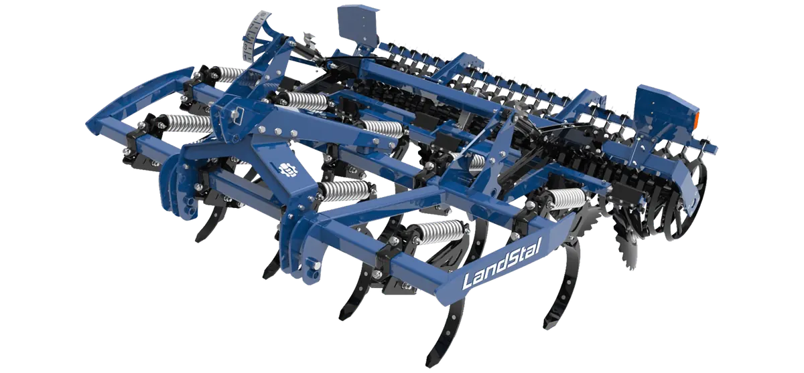
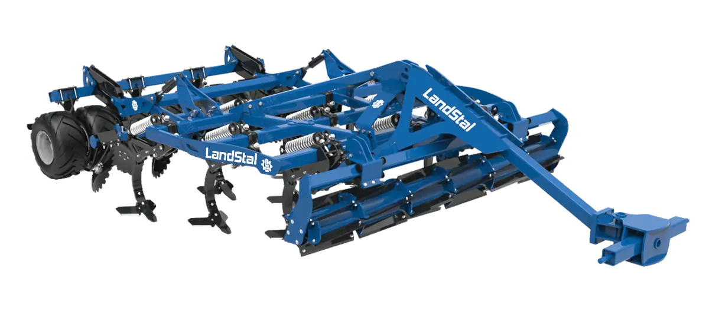

Deep stubble skimmer
Deep stubble cultivation skimmer APB
Radličkový stroj APB pro hlubší strniskové zpracování. Lokální detail už máme jako podmítač 3 m.
Otevřít APB detailProdukty / Deep stubble cultivating
Stroje pro hlubší strniskové zpracování, podrývání a provzdušnění půdy. Vycházíme z oficiální nabídky Landstal, ale poptávky, předvedení a servis vedeme lokálně přes LANDSTAL CZ.
Stroje v kategorii
Kategorie pokrývá radličkové stroje pro hlubší práci, skimmery pro intenzivní zpracování strniště, podrývače pro narušení utužené vrstvy a řadu TERRADEEP pro hlubokou bezorebnou práci.
Radličkový stroj APB pro hlubší strniskové zpracování. Lokální detail už máme jako podmítač 3 m.
Otevřít APB detail
Kratší a kompaktnější APB LP se dvěma řadami slupic pro práci na samotných dlátech bez bočních podřezávačů.
Poptat APB LP
Silnější konfigurace APB Plus pro náročnější práci, větší záběr a intenzivní míchání.
Poptat APB Plus
Hydraulicky sklopná řada APBH pro větší záběr a efektivní práci na větších pozemcích.
Poptat APBH
Provedení APBH Pro pro intenzivní zpracování strniště a vysokou průchodnost materiálu.
Poptat APBH Pro
Podrývače pro narušení zhutněné vrstvy, lepší vsakování vody a podporu hlubšího kořenění.
Poptat GZ / GS / GSC
Provzdušňovací podrývač pro hlubší práci bez zbytečného obracení profilu půdy.
Poptat GAZ / GASC
Agregovaný aerátor pro kombinovanou práci s půdou a zlepšení struktury v jednom průjezdu.
Poptat APBS
Dláto pro hlubokou bezorebnou práci do 45 cm s ripper slupicemi, hydraulickou regulací hloubky a dvojitým ježkovým válcem.
Poptat TERRADEEP M
Silnější varianta TERRADEEP L pro výkonově náročnější traktory, s možností hydropneumatického jištění.
Poptat TERRADEEP L
Nejtěžší provedení TERRADEEP pro práci až do 55 cm, karbidové pracovní prvky a vysoké nároky na tažný výkon.
Poptat TERRADEEP XLTechnický přehled
Základní orientace podle šířky, hloubky a výkonu traktoru. Přesnou konfiguraci vždy ověříme podle válce, jištění, půdy a výbavy konkrétního stroje.
| Řada | Záběr | Pracovní hloubka | Výkon traktoru | Typické použití |
|---|---|---|---|---|
| APB / APB LP / APB Plus | 2,5-4,2 m | do 30 cm | 80-200 k | Intenzivní zpracování strniště a míchání zbytků |
| APBH / APBH Pro | 3,0-6,0 m | do 30 cm | 200-700 k | Větší záběry, sklopné rámy a vysoká průchodnost |
| GZ / GS / GSC | 3,0-4,0 m | do 55 cm | 110-220 k | Narušení zhutněných vrstev a lepší hospodaření s vodou |
| GAZ / GASC / APBS | dle agregace | hluboká práce | dle sestavy | Agregace s dalšími stroji a provzdušnění půdního profilu |
| TERRADEEP M / L / XL | 2,5-3,0 m | 45-55 cm | 130-350 k | Hluboká bezorebná práce a dlátové kypření |
Kompletní katalog
Pro pracovní záběr, jištění, příslušenství a doporučený výkon traktoru je nejlepší navázat katalog na konkrétní podmínky vašeho podniku.